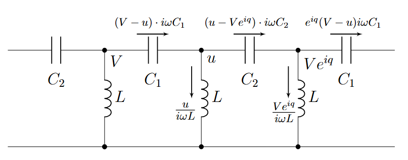
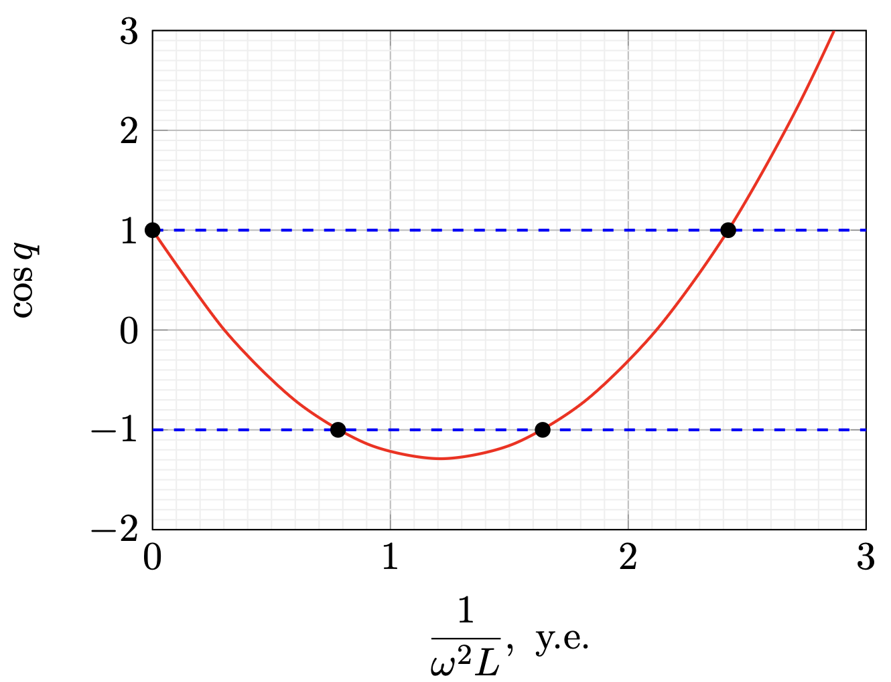
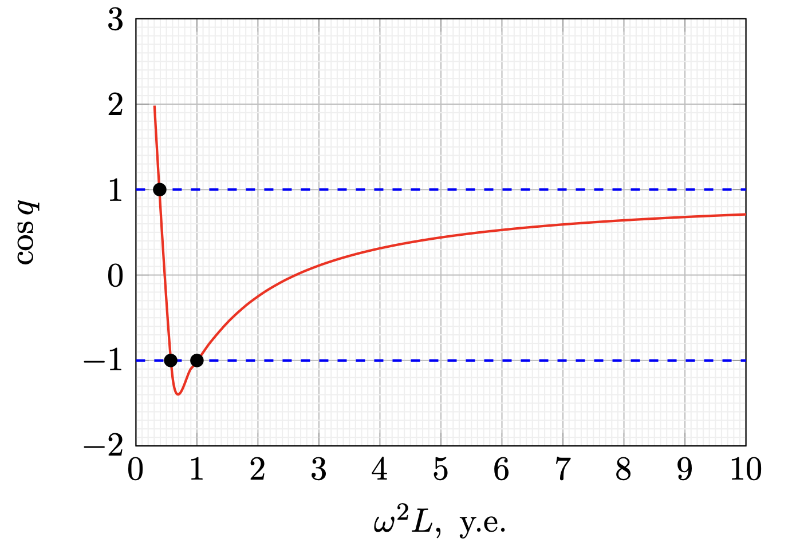
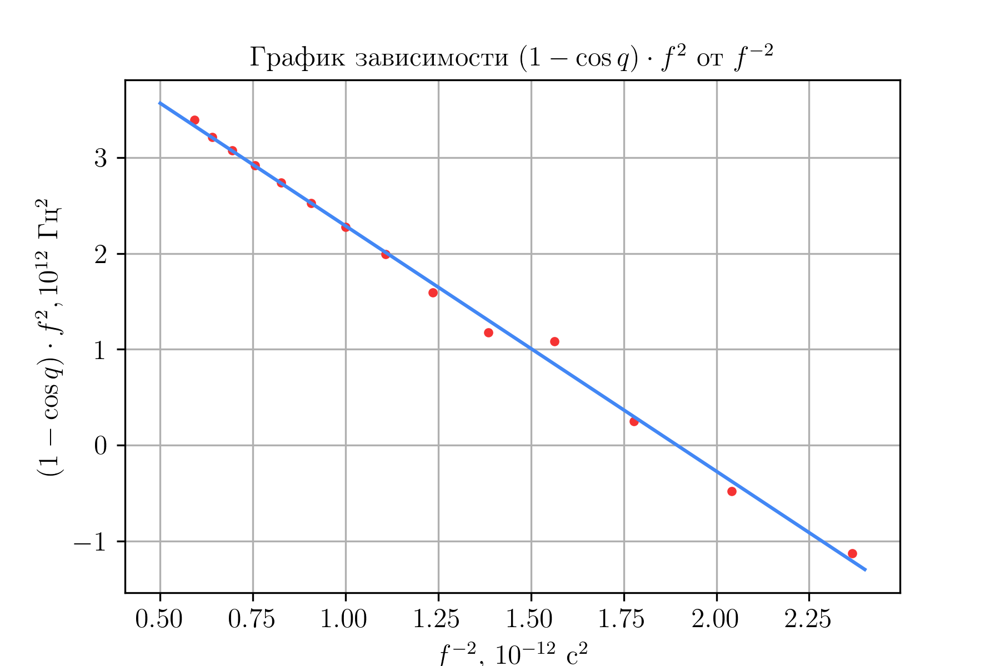
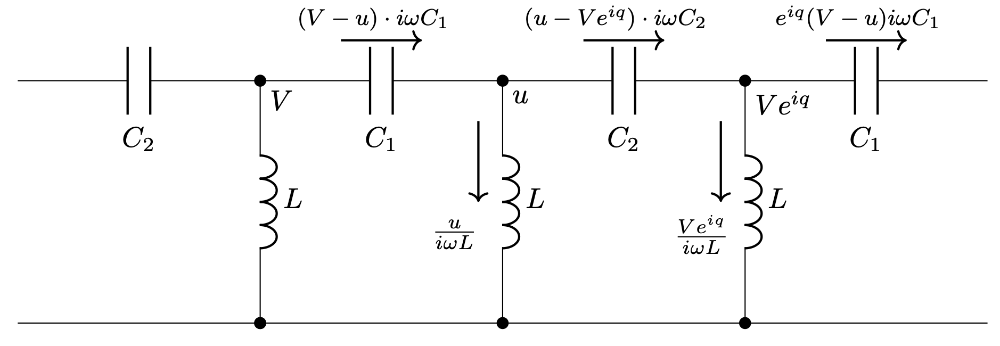
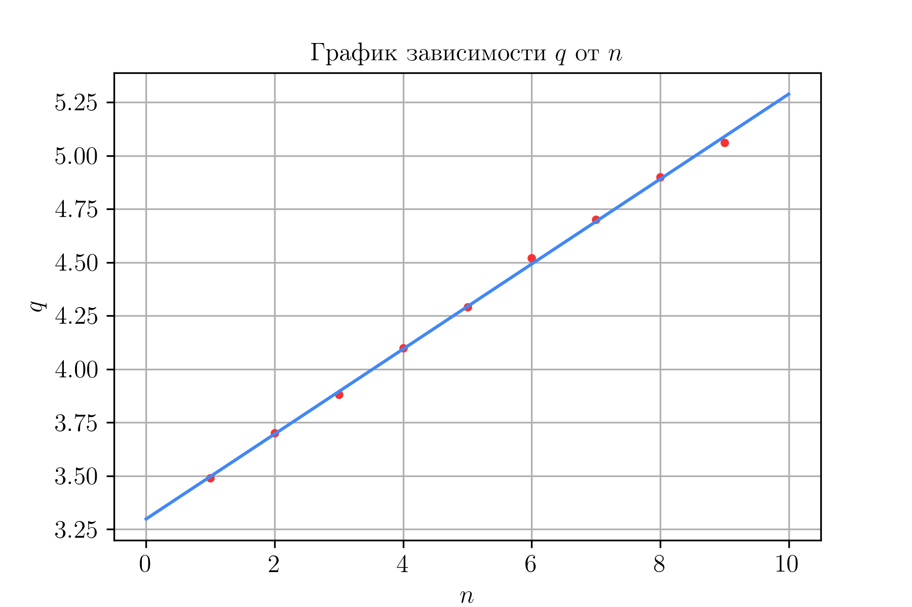

Y26 (2026) — English translation
Let us find the currents flowing in the links, knowing that at the point located to the right of the point $C$ the potential is equal to $u e^{iq}$.
Now let's write the first Kirchhoff rule for nodes with potentials $u$ and $V e^{iq}$, respectively \begin{cases} (V-u) \cdot i \omega C_1 = (u-Ve^{iq}) \cdot i \omega C_2 + \dfrac{u}{i \omega L}, \\ (u-Ve^{iq}) \cdot i \omega C_2 = e^{iq}(V-u) \cdot i \omega C_1 + \dfrac{Ve^{iq}}{i \omega L}. \end{cases} The resulting system of equations is sufficient to obtain an expression for $\cos q(\omega).$

Method 1. From both equations we express $\dfrac{u}{V}$ and equate them. We obtain from equations 1 and 2, respectively: \begin{cases} \dfrac{u}{V} = \dfrac{e^{iq} \cdot i \omega C_2+i \omega C_1}{i \omega \cdot \left(C_1+C_2-\dfrac{1}{\omega^2 L}, \right)}, \\ \dfrac{u}{V} = \dfrac{e^{iq} \cdot i \omega \cdot \left( C_1+C_2-\dfrac{1}{\omega^2 L} \right)}{e^{iq}\cdot i \omega C_1 + i \omega C_2}, \end{cases} from where, equating $\dfrac{u}{V}$ from different equations to each other and reducing by $i \omega$, we obtain an equation containing only the unknown $q$: $$\left( e^{iq}C_2 +C_1 \right)\left( e^{iq}C_1 +C_2 \right) = e^{iq} \left(C_1+C_2-\dfrac{1}{\omega^2L} \right)^2.$$ Now раскроем bracket слева and поделим both part equation on $e^{iq}:$ $$C_1^2+C_2^2 + C_1C_2 \left( e^{iq} + e^{-iq}\right) = \left( C_1+C_2 - \dfrac{1}{\omega^2 L}\right)^2.$$ Taking into account that $e^{iq}+e^{-iq} = 2 \cos(q),$ obtain relation on $\cos q$ $$\cos q = \dfrac{\left( C_1 + C_2 - \dfrac{1}{\omega^2 L} \right)^2-C_1^2-C_2^2}{2 \cdot C_1C_2}.$$ Method 2. On itself деле, fast поступить somewhat иначе. Write the system of equations as linear relatively $V$ and $u$, \begin{cases} V\left(C_1+C_2 e^{iq}\right)+u\left(-C_1-C_2+\dfrac{1}{\omega^2 L}\right)=0,\\ V\left(-C_1-C_2+\dfrac{1}{\omega^2 L}\right)+u\left(C_1+C_2 e^{-iq}\right)=0. \end{cases} So that system have нетривиальное solution (they бесконечное amount), necessarily and sufficiently equate zero главный определитель system. Thus, $$\left(C_1+C_2 e^{iq}\right)\left(C_1+C_2 e^{-iq}\right)=\left(C_1+C_2-\dfrac{1}{\omega^2 L}\right)^2.$$ Finally, $$\cos q = \dfrac{\left( C_1 + C_2 - \dfrac{1}{\omega^2 L} \right)^2-C_1^2-C_2^2}{2 \cdot C_1C_2}.$$
We obtain from equations 1 and 2, respectively: \begin{cases} \dfrac{u}{V} = \dfrac{e^{iq} \cdot i \omega C_2+i \omega C_1}{i \omega \cdot \left(C_1+C_2-\dfrac{1}{\omega^2 L}, \right)}, \\ \dfrac{u}{V} = \dfrac{e^{iq} \cdot i \omega \cdot \left( C_1+C_2-\dfrac{1}{\omega^2 L} \right)}{e^{iq}\cdot i \omega C_1 + i \omega C_2}, \end{cases}
whence, equating $\dfrac{u}{V}$ from different equations to each other and canceling by $i \omega$, we obtain an equation containing only the unknown $q$: $$\left( e^{iq}C_2 +C_1 \right)\left( e^{iq}C_1 +C_2 \right) = e^{iq} \left(C_1+C_2-\dfrac{1}{\omega^2L} \right)^2.$$
Now let's open the parentheses on the left and divide both sides of the equation by $e^{iq}:$ $$C_1^2+C_2^2 + C_1C_2 \left( e^{iq} + e^{-iq}\right) = \left( C_1+C_2 - \dfrac{1}{\omega^2 L}\right)^2.$$
Considering that $e^{iq}+e^{-iq} = 2 \cos(q),$ we obtain the relation for $\cos q$ $$\cos q = \dfrac{\left( C_1 + C_2 - \dfrac{1}{\omega^2 L} \right)^2-C_1^2-C_2^2}{2 \cdot C_1C_2}.$$
Method 2. In fact, it's faster to do things a little differently. Let us write the system of equations as linear with respect to $V$ and $u$,
\begin{cases} V\left(C_1+C_2 e^{iq}\right)+u\left(-C_1-C_2+\dfrac{1}{\omega^2 L}\right)=0,\\ V\left(-C_1-C_2+\dfrac{1}{\omega^2 L}\right)+u\left(C_1+C_2 e^{-iq}\right)=0. \end{cases}
For a system to have a nontrivial solution (there are an infinite number of them), it is necessary and sufficient to set the main determinant of the system equal to zero. Thus,
$$\left(C_1+C_2 e^{iq}\right)\left(C_1+C_2 e^{-iq}\right)=\left(C_1+C_2-\dfrac{1}{\omega^2 L}\right)^2.$$
Finally, $$\cos q = \dfrac{\left( C_1 + C_2 - \dfrac{1}{\omega^2 L} \right)^2-C_1^2-C_2^2}{2 \cdot C_1C_2}.$$
First way. Let us give an expression for $\cos{q}$ $$\cos{q}=1-\dfrac{C_1+C_2}{C_1C_2}\cdot \dfrac{1}{\omega^2 L}+\dfrac{1}{2C_1 C_2}\cdot \left(\dfrac{1}{\omega^2L}\right)^2$$ Solve two square неравенства $\\$ \begin{align*}\cos{q}>1;\\ -\dfrac{C_1+C_2}{C_1C_2}\cdot \dfrac{1}{\omega^2 L}+\dfrac{1}{2C_1 C_2}\cdot \left(\dfrac{1}{\omega^2L}\right)^2>0;\\ \dfrac{1}{\omega^2 L}\left(\dfrac{1}{\omega^2 L}-2\left(C_1+C_2\right)\right)>0; \\ \dfrac{1}{\omega^2 L} \in \left(-\infty;0\right) \cup \left(2\left(C_1+C_2\right);+\infty\right); \\ \omega^2 L \in \left(0;\dfrac{1}{2\left(C_1+C_2\right)}\right)\end{align*} $\\$ \begin{align*}\cos{q}<-1;\\ 2-\dfrac{C_1+C_2}{C_1 C_2} \cdot \dfrac{1}{\omega^2 L}+\dfrac{1}{2C_1C_2}\cdot\left(\dfrac{1}{\omega^2 L}\right)^2<0;\\ \left(\dfrac{1}{\omega^2 L}\right)^2-2\left(C_1 + C_2\right)\cdot\dfrac{1}{\omega^2 L}+4C_1C_2<0;\\ \left(\dfrac{1}{\omega^2 L}-2C_1\right)\left(\dfrac{1}{\omega^2 L}-2C_2\right)<0;\\ \dfrac{1}{\omega^2 L} \in \left(2C_1;2C_2\right);\\ \omega^2 L \in \left(\dfrac{1}{2C_1};\dfrac{1}{2C_2}\right)\end{align*} From объединения system неравенств obtain final answer $$\omega\in\left[0;\dfrac{1}{\sqrt{2\left(C_1+C_2\right)L}}\right)\cup\left(\dfrac{1}{\sqrt{2C_2L}};\dfrac{1}{\sqrt{2C_1L}}\right).$$
$$\cos{q}=1-\dfrac{C_1+C_2}{C_1C_2}\cdot \dfrac{1}{\omega^2 L}+\dfrac{1}{2C_1 C_2}\cdot \left(\dfrac{1}{\omega^2L}\right)^2$$
Let's solve two quadratic inequalities
From combining the system of inequalities we obtain the final answer
$$\omega\in\left[0;\dfrac{1}{\sqrt{2\left(C_1+C_2\right)L}}\right)\cup\left(\dfrac{1}{\sqrt{2C_2L}};\dfrac{1}{\sqrt{2C_1L}}\right).$$
Second way. Let's write down the expression for $x=\cos q$ $$x=1-\dfrac{C_1+C_2}{C_1C_2}\cdot \dfrac{1}{\omega^2L}+\dfrac{1}{2C_1C_2}\cdot \dfrac{1}{\omega^4L^2}.$$ Obtain, that dependence $x(\dfrac{1}{\omega^2L})$ quadratic, construct it graph qualitative graph, on which note point intersection with straight $\cos{q}=1$ and $\cos{q}=-1$.
The resulting graph can be qualitatively reconstructed in the $y=\cos{q}$ $x=\omega^2L$ axes, preserving all extrema and transforming the $x$ axis.
Let us introduce the notation corresponding to the coordinates $x$ at the point of intersection of the constructed graph with the lines $\cos{q}=1$, $\cos{q}=1$. At the point of intersection of the graph with $\cos{q}=1$, $\omega=\omega_1$. At the intersection point of the graph with $\cos{q}=-1$, $\omega=\omega_2$ and $\omega=\omega_3$. Let's compose and solve quadratic equations for $\dfrac{1}{\omega^2L}$ $\\$ \begin{align*}\cos{q}=1;\\ -\dfrac{C_1+C_2}{C_1C_2}\cdot \dfrac{1}{\omega^2 L}+\dfrac{1}{2C_1 C_2}\cdot \left(\dfrac{1}{\omega^2L}\right)^2=0;\\ \dfrac{1}{\omega^2 L}\left(\dfrac{1}{\omega^2 L}-2\left(C_1+C_2\right)\right)=0; \\ \dfrac{1}{\omega^2 L} = 2\left(C_1+C_2\right) \text{or} \dfrac{1}{\omega^2 L} = 0\end{align*} $\\$ \begin{align*}\cos{q}=-1;\\ 2-\dfrac{C_1+C_2}{C_1 C_2} \cdot \dfrac{1}{\omega^2 L}+\dfrac{1}{2C_1C_2}\cdot\left(\dfrac{1}{\omega^2 L}\right)^2=0;\\ \left(\dfrac{1}{\omega^2 L}\right)^2-2\left(C_1 + C_2\right)\cdot\dfrac{1}{\omega^2 L}+4C_1C_2=0;\\ \left(\dfrac{1}{\omega^2 L}-2C_1\right)\left(\dfrac{1}{\omega^2 L}-2C_2\right)=0;\\ \dfrac{1}{\omega^2 L} = 2C_1 \text{or} \dfrac{1}{\omega^2 L} = 2C_2\end{align*} Comparing the solutions of the equations with the graph, we get the answer $$\omega\in\left[0;\dfrac{1}{\sqrt{2\left(C_1+C_2\right)L}}\right)\cup\left(\dfrac{1}{\sqrt{2C_2L}};\dfrac{1}{\sqrt{2C_1L}}\right).$$
Comparing the solutions of the equations with the graph, we get the answer
$$\omega\in\left[0;\dfrac{1}{\sqrt{2\left(C_1+C_2\right)L}}\right)\cup\left(\dfrac{1}{\sqrt{2C_2L}};\dfrac{1}{\sqrt{2C_1L}}\right).$$


Let's connect the generator to the circuit according to the instructions in the condition. Using two oscilloscope channels, we will measure the doubled voltage amplitude on the generator $U_0$ and the doubled voltage amplitude on the first link $U_1$. Using the phase shift of the signals on an oscilloscope we will measure $\Re{(q)}$ $$\Re{(q)}=2\pi f\Delta T$$ By ratio amplitude on сигналах be measure $\Im{(q)}$ $$\Im{(q)}=\ln{\dfrac{U_0}{U_1}}$$ Note. For проведении measurement in range frequency $f\in\left[770;890\right]~\text{kHz}$ chain be located in проводящем state (correspond range frequency $f\in\left(\ dfrac{1}{\sqrt{2\left(C_1+C_2\right)L}};\dfrac{1}{\sqrt{2C_2L}}\right)$), therefore, during measurements, the influence of the reflected wave can be noticed. When linearized, these points will produce outliers.
Using the phase shift of the signals on an oscilloscope we will measure $\Re{(q)}$
$$\Re{(q)}=2\pi f\Delta T$$
Based on the ratio of the amplitudes on the signals, we will measure $\Im{(q)}$
$$\Im{(q)}=\ln{\dfrac{U_0}{U_1}}$$
Note. When making measurements in the frequency range $f\in\left[770;890\right]~\text{kHz}$, the circuit is in a conducting state (corresponding to the frequency range $f\in\left(\dfrac{1}{\sqrt{2\left(C_1+C_2\right)L}};\dfrac{1}{\sqrt{2C_2L}}\right)$), so during measurements you can notice the influence of the reflected wave. When linearized, these points will produce outliers.
$f,~\text{kHz}$ $\Delta T,~\text{ns}$ $U_0,~\text{mV}$ $U_1,~\text{mV}$ $\Re{(q)}$ $\Im{(q)}$ $f^{-2}$, $10^{-12}~\mathrm{s}^2$ $\Re(\cos q)$ $(1-\cos{q})\cdot f^2,~10^{12}\text{ Hz}^2$ 650 0 57.6 8 0.00 -1.97 2.37 3.67 -1.13 700 32 128 34.4 0.14 -1.31 2.04 1.98 -0.48 750 216 284 408 1.02 0.36 1.78 0.56 0.25 800 452 616 416 2.27 -0.39 1.56 -0.70 1.09 850 396 328 172 2.11 -0.65 1.38 -0.63 1.18 900 480 304 212 2.71 -0.36 1.23 -0.97 1.60 950 516 252 134 3.08 -0.63 1.11 -1.21 1.99 1000 496 232 112 3.12 -0.73 1.00 -1.28 2.28 1050 484 232 110 3.19 -0.75 0.91 -1.29 2.53 1100 460 244 120 3.18 -0.71 0.83 -1.26 2.74 1150 436 268 142 3.15 -0.64 0.76 -1.21 2.92 1200 416 304 182 3.14 -0.51 0.69 -1.13 3.07 1250 396 368 264 3.11 -0.33 0.64 -1.06 3.21 1300 388 520 464 3.17 -0.11 0.59 -1.01 3.39
Using the result of the previous points $$\cos{q}=1-\dfrac{C_1+C_2}{C_1C_2}\cdot \dfrac{1}{\omega^2L}+\dfrac{1}{2C_1C_2}\cdot \dfrac{1}{\omega^4L^2}.$$Transform expression obtain линеаризацию $(1-\cos{q})\cdot\omega^2L$ from $\dfrac{1}{\omega^2L}$ $$(1-\cos{q})\cdot\omega^2L=\dfrac{C_1+C_2}{C_1C_2}-\dfrac{1}{2C_1C_2}\cdot \dfrac{1}{\omega^2L}.$$We linearize the dependence and construct a graph.
Linear dependence parameters (slope coefficient and shift index, respectively)$$k=-2.58\cdot10^{24}~\text{Hz}^4,\quad b=4.86\cdot10^{12}~\text{Hz}^2.$$

According to the theory,\begin{align*}k=-\dfrac{(2\pi)^2}{2L^2}\cdot\dfrac{1}{C_1C_2},\quad b=\dfrac{(2\pi)^2}{L}\cdot\dfrac{C_1+C_2}{C_1C_2}. \end{align*} From where we get (using, for example, Vieta’s theorem for a quadratic equation whose roots are inverse capacitances) \begin{align*}C_1=0.43 \text{nF},\\ C_2=0.89 \text{nF}. \end{align*}
\begin{align*}k=-\dfrac{(2\pi)^2}{2L^2}\cdot\dfrac{1}{C_1C_2},\quad b=\dfrac{(2\pi)^2}{L}\cdot\dfrac{C_1+C_2}{C_1C_2}. \end{align*} Where do we get it from (using, for example, Vieta’s theorem for a quadratic equation whose roots are inverse capacities)
\begin{align*}C_1=0.43 \text{nF},\\ C_2=0.89 \text{nF}. \end{align*}
Let's arrange the currents and potentials in the circuit similarly to part A
Then we write down the wave impedance $z_r$ for a wave traveling to the right $$z_r=\dfrac{V}{I}=\dfrac{V}{V-u}\cdot\dfrac{1}{i\omega C_1}.$$Substitute relation for $\dfrac{u}{V}$, obtain in part A $$z_r=\dfrac{1}{1-\dfrac{C_1+C_2 e^{iq}}{C_1+C_2-\dfrac{1}{\omega^2L}}}\cdot\dfrac{1}{i\omega C_1}=\dfrac{C_1+C_2-\dfrac{1}{\omega^2L}}{C_2(1-e^{iq})-\dfrac{1}{\omega^2L}}\cdot\dfrac{1}{i\omega C_1}.$$Expression for $z_l$ one can obtain use замену $q \rightarrow -q$ $$z_l=\dfrac{C_1+C_2-\dfrac{1}{\omega^2L}}{C_2(1-e^{-iq})-\dfrac{1}{\omega^2L}}\cdot\dfrac{1}{i\omega C_1}.$$

Let's write the boundary condition for the current flowing from a link in the circuit with number $N$ $$I_r(N,t)+I_l(N,t)=0.$$ Let's express the currents of each of the waves through the corresponding voltages on the zero link \begin{align*}\dfrac{V_r(0,t)e^{iqN}}{z_r}+\dfrac{V_l(0,t)e^{-iqN}}{z_l}=0,\\ V_l(0,t)=-\dfrac{z_l}{z_r}V_r(0,t)e^{2iqN}.\end{align*}
Let's write an expression for the total impedance of the circuit by substituting the amplitude of voltage and current as the sum of the amplitudes of voltage and current of two waves $$z=\dfrac{V_r(0,t)+V_l(0,t)}{I_r(0,t)+I_l(0,t)}=\dfrac{V_r(0,t)+V_l(0,t)}{\dfrac{V_r(0,t)}{z_r}+\dfrac{V_l(0,t)}{z_l}}.$$Substitute obtain relation on amplitude voltage wave $$z=\dfrac{1-\dfrac{z_l}{z_r}e^{2iqN}}{\dfrac{1}{z_r}+\dfrac{1}{z_l}\left(-\dfrac{z_l}{z_r}e^{2iqN}\right)}=\dfrac{z_r-z_le^{2iqN}}{1-e^{2iqN}}.$$Substitute relation on impedance and neglect $\dfrac{1}{\omega^2L}$ $$z=z_r\dfrac{1-\dfrac{C_2\left(1-e^{iq}\right)-\dfrac{1}{\omega^2L}}{C_2\left(1-e^{-iq}\right)-\dfrac{1}{\omega^2L}}\cdot e^{2iqN}}{1-e^{2iqN}}=z_r\dfrac{1-\dfrac{1-e^{iq}}{1-e^{-iq}}\cdot e^{2iqN}}{1-e^{2iqN}}=z_r\dfrac{1+e^{2iq\left(N+\frac{1}{2}\right)}}{1-e^{2iqN}}.$$Take magnitude/modulus from obtain expression $$|z|=|z_r|\dfrac{\cos{\left(q\left(N+\frac{1}{2}\right)\right)}}{\sin{\left(qN\right)}}.$$
The maximum modulus is reached at $qN=\pi \Delta n$. Let us obtain an expression for the frequencies at which the impedance extrema $$\arccos{\left(\dfrac{1}{2C_1C_2}\left(\dfrac{1}{\omega^2L}-\left(C_1+C_2\right)\right)^2-\left(C_1^2+C_2^2\right)\right)}=\dfrac{\pi \Delta n}{N}.$$ are reached
Let's connect to the board according to the condition, we will measure the frequencies at which the minimum amplitude of the voltage across the resistor is achieved. We obtain the signal on the resistor using the math oscilloscope mode, subtracting from the signal taken from the generator the signal taken on the J2 - GND contacts.
$n$ $f_{rez},~\text{kHz}$ $q$ 1 1466 3.49 2 1590 3.70 3 1717 3.88 4 1920 4.10 5 2137 4.29 6 2489 4.52 7 2899 4.70 8 3579 4.90 9 4549 5.06
Let us construct the dependence of $q=2\pi-\arccos{\left(\dfrac{1}{2C_1C_2}\left(\dfrac{1}{\omega^2L}-\left(C_1+C_2\right)\right)^2-\left(C_1^2+C_2^2\right)\right)}$ on $n$.
The slope is equal to $k=0.198$, hence $N=15.9\approx 16$.
